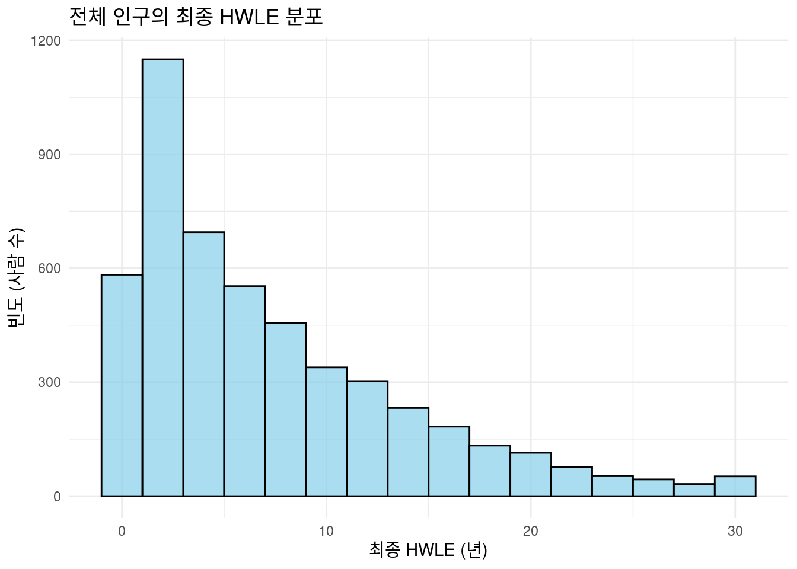
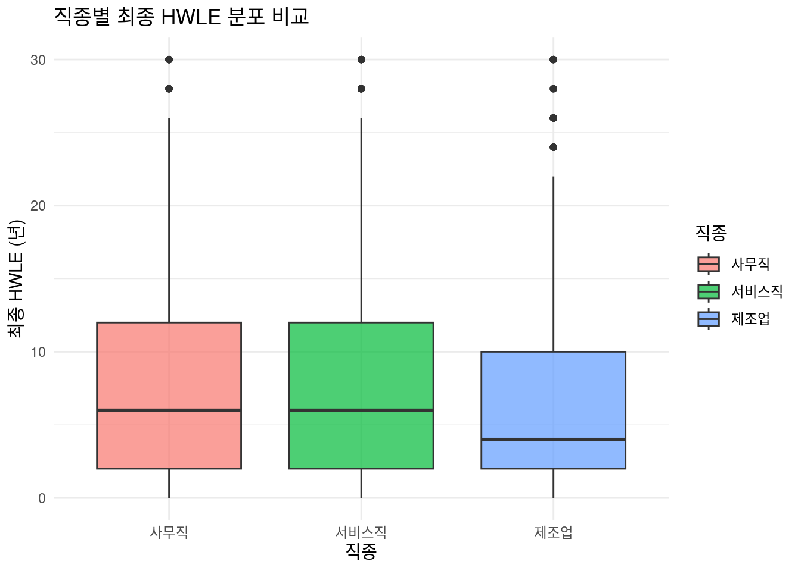
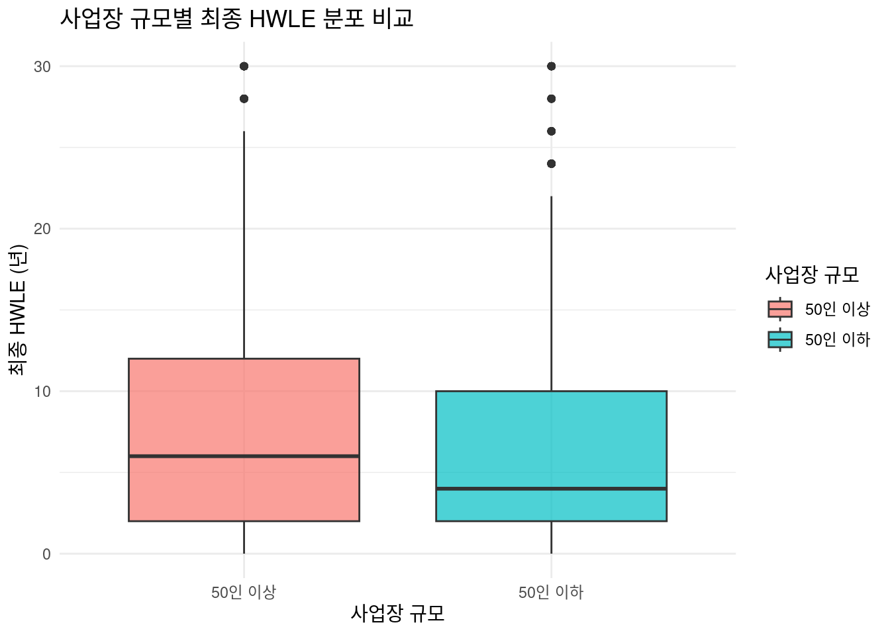
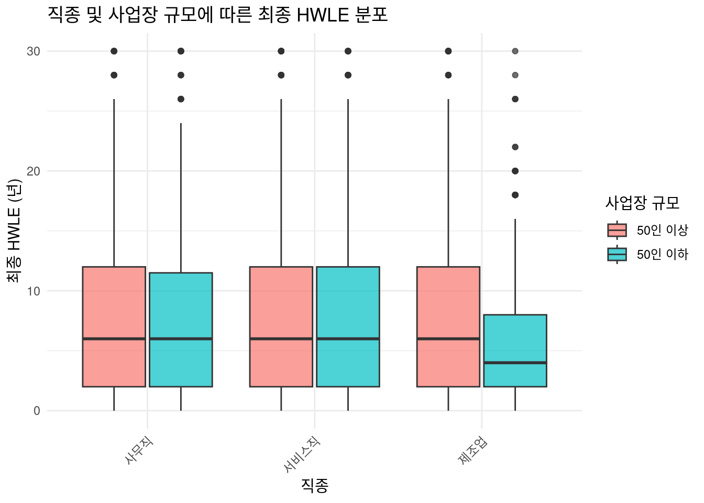
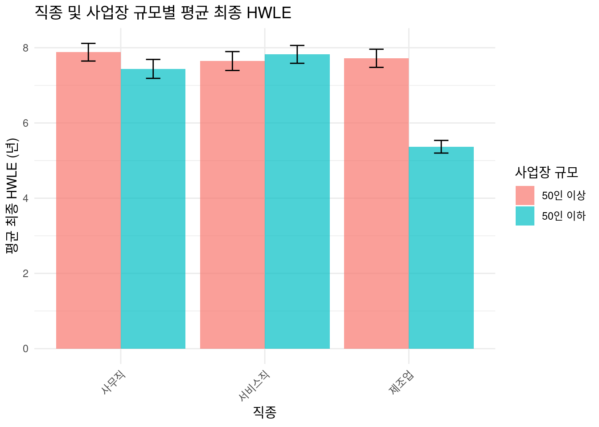

if(!require(tidyverse)) install.packages("tidyverse")
if(!require(msm)) install.packages("msm")
library(tidyverse)
library(msm)7 건강 근로 기대 수명(HWLE)
7.1 소개
건강 근로 기대 수명(Healthy Working Life Expectancy, HWLE)은 특정 연령의 개인이 앞으로 얼마나 더 건강하게 일할 것으로 기대되는 평균 기간을 나타내는 지표입니다. 이 지표는 개인의 삶의 질 평가뿐만 아니라, 특히 고령화 사회에서 국가의 노동력 확보, 연금 정책, 복지 시스템 설계에 있어 핵심적인 정보를 제공합니다. 세계보건기구(WHO)는 ’건강’을 단순히 질병이 없는 상태가 아니라 신체적, 정신적, 사회적으로 양호한 상태로 정의하며 , HWLE는 이러한 포괄적인 건강 개념을 근로 능력과 결합하여 평가합니다. HWLE의 이해는 인구 집단의 건강 상태 변화를 모니터링하고, 건강 불평등을 평가하며, 공중 보건 정책의 효과를 측정하는 데 중요합니다
이 강의록은 R 프로그래밍 환경을 활용하여 시뮬레이션 데이터를 기반으로 HWLE를 분석하는 과정을 단계별로 다룹니다. 데이터 준비부터 시작하여, 관찰된 HWLE 계산 및 시각화, 그리고 다중상태모델(Multi-State Model, MSM)을 이용한 모델 기반 HWLE 기대치 추정의 기초까지 실습합니다.
주요 내용은 다음과 같습니다:
- 데이터 준비 및 전처리: 시뮬레이션 데이터를 불러오고, 분석에 적합한 형태로 가공합니다. 이 과정에는 필요한 R 패키지 로드, 데이터 구조 확인, 그리고 분석에 필요한 ‘상태(state)’ 변수 생성이 포함됩니다.
- tidyverse을 이용한 관찰된 HWLE 계산: 각 개인별로 실제로 건강하게 일한 기간, 즉 관찰된 HWLE를 계산합니다. 이는 데이터에 기록된 각 개인의 경험을 직접적으로 요약하는 기술적(descriptive) 접근 방식입니다.
- ggplot2를 이용한 관찰된 HWLE 시각화: 계산된 관찰된 HWLE의 분포를 시각화하고, 직종이나 사업장 규모와 같은 보정 변수에 따른 HWLE의 차이를 탐색합니다. ggplot2 패키지를 활용하여 다양한 그래프(히스토그램, 박스 플롯, 막대 그래프)를 생성합니다.
- msm 패키지를 이용한 HWLE 기대치 추정: 다중상태모델을 이용하여 모델 기반의 HWLE 기대치를 추정하는 기초적인 방법을 소개합니다. 이는 개인들이 시간에 따라 여러 건강 및 근로 상태를 어떻게 전환하는지 모델링하여, 특정 연령 및 특성을 가진 집단의 평균적인 HWLE를 예측하는 접근법입니다.
7.2 데이터 준비 및 전처리
7.2.1 필요한 패키지 로드
분석에 필요한 tidyverse (데이터 전처리 및 시각화)와 msm (다중상태모델) 패키지를 로드합니다.
7.2.2 시뮬레이션 데이터 불러오기
url <- "https://raw.githubusercontent.com/jinhaslab/opendata/main/data/sim_data_cov_final.rds"
download.file(url, "data/sim_data_cov_final.rds")
sim_data = readRDS("data/sim_data_cov_final.rds")실습을 위해 만들어 놓은 "sim_data_cov_final.rds" 데이터를 불러옵니다. 이 데이터는 각 개인의 시간 경과에 따른 건강 상태, 근로 상태, 사망 여부 및 보정 변수인 직종(occupation)과 사업장 규모(workplace_size) 정보를 포함합니다.
7.3 데이터 주요 변수 설명
데이터의 구조를 이해하는 것은 분석의 정확성을 위해 필수적입니다. 각 변수는 다음과 같은 정보를 담고 있습니다.
- person_id: 각 개인을 고유하게 식별하는 개인 식별자입니다.
- wave: 데이터가 수집된 시점 또는 관찰 웨이브를 나타냅니다.
- age: 개인의 연령입니다.
- health_status: 건강 상태를 나타내며, 0은 ‘건강하지 않음’, 1은 ’건강함’을 의미합니다.
- work_status: 근로 상태를 나타내며, 0은 ‘비근로’, 1은 ’근로 중’을 의미합니다.
- mortality_status: 사망 여부를 나타내며, 0은 ‘생존’, 1은 ’사망’을 의미합니다.
- occupation: 개인의 직종을 나타내는 범주형 변수입니다 (“사무직”, “서비스직”, “제조업”).
- workplace_size: 개인의 사업장 규모를 나타내는 범주형 변수입니다 (“50인 이하”, “50인 이상”).
이러한 변수들을 조합하여 HWLE 분석의 핵심이 되는 ’상태(state)’를 정의하게 됩니다.
7.3.1 1.3 state 변수 생성 및 데이터 정리
다중상태모델(MSM) 분석을 위해서는 개인의 상태를 명확하게 정의하는 단일 변수가 필요합니다. msm 패키지에서 사용하기 용이하도록, 기존의 health_status, work_status, mortality_status 변수를 조합하여 5가지 가능한 상태를 나타내는 state 변수를 생성합니다. 각 상태는 개인의 건강 및 근로 상황을 포괄적으로 나타냅니다.
7.3.1.1 상태 정의
- 상태 1: 건강하며 근로 (Healthy and in Work, HW) -
health_status == 1그리고work_status == 1 - 상태 2: 건강하며 비근로 (Healthy and Not in Work, HNW) -
health_status == 1그리고work_status == 0 - 상태 3: 건강하지 않으나 근로 (Not Healthy and in Work, NHW) -
health_status == 0그리고work_status == 1 - 상태 4: 건강하지 않으며 비근로 (Not Healthy and Not in Work, NHNW) -
health_status == 0그리고work_status == 0 - 상태 5: 사망 (Dead) -
mortality_status == 1
이러한 상태 정의는 HWLE 분석의 핵심입니다. 상태 1(HW)은 개인이 ‘건강하게 일하고 있는’ 상태를 의미하며, HWLE는 이 상태에서 보내는 시간의 기댓값으로 정의될 수 있습니다. 상태 5(Dead)는 흡수 상태(absorbing state)로, 한 번 이 상태에 진입하면 다른 상태로 전이할 수 없습니다. 나머지 상태들은 과도적 상태(transient state)입니다.
7.3.1.2 R 코드: state 변수 생성
sim_data_processed_manual <- sim_data %>%
mutate(
state = case_when(
mortality_status == 1 ~ 5, # 사망 상태
health_status == 1 & work_status == 1 ~ 1, # Healthy and in work
health_status == 1 & work_status == 0 ~ 2, # Healthy and not in work
health_status == 0 & work_status == 1 ~ 3, # Not healthy and in work
health_status == 0 & work_status == 0 ~ 4, # Not healthy and not in work
TRUE ~ NA_real_ # 혹시 모를 예외 처리
)
) %>%
select(person_id, wave, age, state, occupation, workplace_size) %>%
filter(!is.na(state)) %>%
arrange(person_id, wave)
# 처리된 데이터 확인
head(sim_data_processed_manual) person_id wave age state occupation workplace_size
1 1 1 50 1 제조업 50인 이하
2 1 2 52 5 제조업 50인 이하
3 2 1 50 1 제조업 50인 이상
4 2 2 52 3 제조업 50인 이상
5 2 3 54 3 제조업 50인 이상
6 2 4 56 3 제조업 50인 이상이렇게 생성된 sim_data_processed_manual 데이터프레임은 각 개인의 시간에 따른 상태 변화를 명확하게 나타내며, 이후 dplyr을 이용한 관찰된 HWLE 계산과 msm 패키지를 이용한 모델 기반 HWLE 추정에 사용됩니다.
7.4 관찰된 HWLE 계산
이 파트에서는 각 개인이 실제로 ‘건강하며 근로’ 상태(state == 1)에서 얼마나 시간을 보냈는지, 즉 ’관찰된 HWLE’를 계산합니다. 이는 각 개인의 실제 경험을 바탕으로 한 기술 통계적 접근입니다.
7.4.1 데이터 필터링 및 HWLE 계산
# 분석 시작 연령(50세) 이상 데이터 필터링 및 정렬
mm <- sim_data_processed_manual %>%
filter(age >= 50) %>%
arrange(person_id, wave)다음으로, 각 관찰 웨이브(wave) 사이의 시간 간격을 정의합니다. 본 시뮬레이션에서는 한 웨이브가 2년을 나타낸다고 가정합니다. 이 wave_interval은 각 개인이 상태 1에 머무를 때 HWLE에 기여하는 시간을 계산하는 데 사용됩니다. 이제 각 개인별로, 각 웨이브에서 상태가 1(‘건강하며 근로’)이면 wave_interval만큼 HWLE에 기여하고, 그렇지 않으면 0만큼 기여하도록 hwle_contribution 변수를 생성합니다. 그리고 cumsum() 함수를 사용하여 각 시점까지의 누적 HWLE(cumulative_hwle)를 계산합니다.
# 웨이브 간격 정의 (한 웨이브 당 2년)
#
wave_interval <- 2
# 각 개인별, 각 웨이브별 HWLE 기여분 및 누적 HWLE 계산
mm_cumulative <- mm %>%
group_by(person_id) %>%
mutate(
hwle_contribution = ifelse(state == 1, wave_interval, 0),
cumulative_hwle = cumsum(hwle_contribution)
) %>%
ungroup()
# 각 개인의 최종 HWLE 계산
mm1 <- mm %>%
group_by(person_id, occupation, workplace_size) %>%
mutate(hwle_contribution = ifelse(state == 1, wave_interval, 0)) %>%
summarise(
final_hwle = sum(hwle_contribution),
.groups = 'drop'
)
# 결과 확인
head(mm1)# A tibble: 6 × 4
person_id occupation workplace_size final_hwle
<int> <chr> <chr> <dbl>
1 1 제조업 50인 이하 2
2 2 제조업 50인 이상 12
3 3 사무직 50인 이하 12
4 4 서비스직 50인 이하 6
5 5 사무직 50인 이하 10
6 6 서비스직 50인 이하 2summary(mm1$final_hwle) Min. 1st Qu. Median Mean 3rd Qu. Max.
0.000 2.000 6.000 7.302 10.000 30.000 mm1 데이터프레임의 final_hwle 변수는 각 개인이 50세 이후 관찰 기간 동안 ‘건강하며 근로’ 상태에서 보낸 총 햇수를 나타냅니다.
7.5 관찰된 HWLE 시각화
dplyr을 통해 계산된 개인별 최종 HWLE(final_hwle)를 사용하여, 데이터의 분포 특성과 주요 보정 변수(직종, 사업장 규모)에 따른 차이를 시각적으로 탐색합니다.
7.5.1 전체 인구의 최종 HWLE 분포 (히스토그램)
mm1 %>%
ggplot(aes(x = final_hwle)) +
geom_histogram(binwidth = 2, fill = "skyblue", color = "black", alpha = 0.7) +
labs(title = "전체 인구의 최종 HWLE 분포",
x = "최종 HWLE (년)",
y = "빈도 (사람 수)") +
theme_minimal()
7.5.2 직종별 최종 HWLE 분포 비교 (박스 플롯)
mm1 %>%
ggplot(aes(x = occupation, y = final_hwle, fill = occupation)) +
geom_boxplot(alpha = 0.7) +
labs(title = "직종별 최종 HWLE 분포 비교",
x = "직종",
y = "최종 HWLE (년)",
fill = "직종") +
theme_minimal()
7.5.3 사업장 규모별 최종 HWLE 분포 비교 (박스 플롯)
mm1 %>%
ggplot(aes(x = workplace_size, y = final_hwle, fill = workplace_size)) +
geom_boxplot(alpha = 0.7) +
labs(title = "사업장 규모별 최종 HWLE 분포 비교",
x = "사업장 규모",
y = "최종 HWLE (년)",
fill = "사업장 규모") +
theme_minimal()
7.5.4 직종 및 사업장 규모 조합별 HWLE 분포 비교
7.5.4.1 조합별 박스 플롯
mm1 %>%
ggplot(aes(x = occupation, y = final_hwle, fill = workplace_size)) +
geom_boxplot(alpha = 0.7, position = position_dodge(width = 0.8)) +
labs(title = "직종 및 사업장 규모에 따른 최종 HWLE 분포",
x = "직종",
y = "최종 HWLE (년)",
fill = "사업장 규모") +
theme_minimal() +
theme(axis.text.x = element_text(angle = 45, hjust = 1))
7.5.4.2 조합별 평균 막대 그래프 (표준오차 포함)
mm1_summary_interaction <- mm1 %>%
group_by(occupation, workplace_size) %>%
summarise(
mean_final_hwle = mean(final_hwle),
sd_final_hwle = sd(final_hwle),
n = n(),
se_final_hwle = sd_final_hwle / sqrt(n),
.groups = 'drop'
)
mm1_summary_interaction %>%
ggplot(aes(x = occupation, y = mean_final_hwle, fill = workplace_size)) +
geom_bar(stat = "identity", position = position_dodge(width = 0.9), alpha = 0.7) +
geom_errorbar(aes(ymin = mean_final_hwle - se_final_hwle, ymax = mean_final_hwle + se_final_hwle),
width = 0.2, position = position_dodge(width = 0.9)) +
labs(title = "직종 및 사업장 규모별 평균 최종 HWLE",
x = "직종",
y = "평균 최종 HWLE (년)",
fill = "사업장 규모") +
theme_minimal() +
theme(axis.text.x = element_text(angle = 45, hjust = 1))
7.6 다중상태모델 HWLE 기대치 추정
이전 파트에서는 각 개인의 실제 관찰 기록을 바탕으로 HWLE를 계산하고 시각화하는 기술적(descriptive) 분석을 수행했습니다. 이번 파트에서는 msm 패키지를 사용하여 다중상태모델(Multi-State Model, MSM)을 구축하고, 이를 통해 모델 기반의 HWLE ’기대치’를 추정하는 방법을 살펴봅니다. 이 접근법은 개인들이 시간에 따라 여러 건강 및 근로 상태 간을 어떻게 전이하는지를 확률적으로 모델링하여, 특정 인구 집단 또는 하위 그룹의 평균적인 HWLE를 예측합니다.
7.6.1 이론적 배경: 다중상태모델 (MSM) 기초
- 다중상태모델 (MSM): 개인이 시간이 지남에 따라 유한한 수의 상태(state)들 사이를 이동하는 과정을 모델링합니다.
- 상태 공간: {1:HW, 2:HNW, 3:NHW, 4:NHNW, 5:Dead}
- 과도적 상태 및 흡수 상태: HW, HNW, NHW, NHNW는 과도적 상태, Dead는 흡수 상태.
- 마르코프 가정: 미래는 현재 상태에만 의존.
- 전이 강도 (q_rs): 상태 r에서 s로의 순간적인 전이율.
- Q 행렬: 모든 전이 강도를 포함.
- 전이 확률 (p_rs(t)): 시간 t 동안의 전이 확률.
- 시간 동질성: 전이 강도가 시간에 따라 변하지 않음.
여기서는 이해를 돕기 위해 상태가 2개인 매우 간단한 모델을 사용하겠습니다. 실제 HWLE 모델은 상태가 5개로 더 복잡하지만, 기본 원리는 동일합니다.
상황 설정: 두 가지 상태 - ‘일함(W)’과 ’일하지 않음(NW)’
상태 1: W (Working, 일함) 상태 2: NW (Not Working, 일하지 않음)
- Q-matrix (전이 강도 행렬) 정의
Q-matrix는 한 상태에서 다른 상태로 얼마나 빠르게 변하는지를 나타냅니다. \[Q = \begin{pmatrix} q_{WW} & q_{WN} \\ q_{NW} & q_{NNW} \end{pmatrix}\]
\(q_{WN}\): ‘일함(W)’ 상태에서 ‘일하지 않음(NW)’ 상태로의 순간적인 전이율 (예: \(\alpha\)) \(q_{NW}\): ‘일하지 않음(NW)’ 상태에서 ‘일함(W)’ 상태로의 순간적인 전이율 (예: \(\beta\)) 행의 합은 0이 되어야 하므로, 대각선 요소는 다음과 같습니다:
\[q_{WW} = -q_{WN} = -\alpha\]
\[q_{NNW} = -q_{NW} = -\beta\] 따라서 Q-matrix는 이렇게 표현됩니다:
\[Q = \begin{pmatrix} -\alpha & \alpha \\ \beta & -\beta \end{pmatrix}\]
예시 값:
\(\alpha = 0.1\) (매년 ‘일함’ 상태의 사람 중 10%가 ‘일하지 않음’ 상태로 바뀔 수 있는 순간적인 비율) \(\beta = 0.05\) (매년 ‘일하지 않음’ 상태의 사람 중 5%가 ‘일함’ 상태로 바뀔 수 있는 순간적인 비율) 그러면 Q-matrix는: \[Q = \begin{pmatrix} -0.1 & 0.1 \\ 0.05 & -0.05 \end{pmatrix}\]
- P(t) (전이 확률 행렬) 계산
Q-matrix는 순간적인 변화율이고, 우리가 실제로 특정 기간 t 동안 한 상태에서 다른 상태로 변할 확률을 알고 싶다면 전이 확률 행렬 P(t)를 계산해야 합니다. 이 둘의 관계는 다음과 같습니다:
\[P(t) = \exp(tQ)\]
여기서 \[\exp()\]는 행렬 지수 함수(matrix exponential)입니다. 이 계산은 복잡할 수 있지만, 2x2 경우에 대한 공식은 다음과 같습니다 (또는 수치적으로 계산합니다):
\[p_{WW}(t)\]: 시간 t 이후에도 계속 ‘일함(W)’ 상태일 확률 \[p_{WN}(t)\]: 시간 t 이후 ‘일함(W)’에서 ’일하지 않음(NW)’ 상태로 변할 확률 \[p_{NW}(t)\]: 시간 t 이후 ‘일하지 않음(NW)’에서 ’일함(W)’ 상태로 변할 확률 \[p_{NNW}(t)\]: 시간 t 이후에도 계속 ‘일하지 않음(NW)’ 상태일 확률
위의 \[\alpha, \beta\]를 사용한 Q-matrix에 대한 \[P(t)\]의 각 요소 공식은 다음과 같습니다:
\[p_{WW}(t) = \frac{\beta}{\alpha+\beta} + \frac{\alpha}{\alpha+\beta} e^{-(\alpha+\beta)t}\] \[p_{WN}(t) = \frac{\alpha}{\alpha+\beta} - \frac{\alpha}{\alpha+\beta} e^{-(\alpha+\beta)t}\]
직관적인 이해:
\(\pi_W = \frac{\beta}{\alpha + \beta}\): ‘일함(W)’ 상태에 사람이 많아지려면, ‘일하지 않음(NW)’ 상태에서 ‘일함(W)’ 상태로 넘어오는 힘(\(\beta\))이 강해야 합니다. 분모의 \((\alpha + \beta)\)는 시스템 전체의 “활동량” 또는 “변화의 총량”이라고 생각할 수 있습니다. 즉, 전체 변화 중에서 \(\beta\)만큼의 비율로 ‘일함(W)’ 상태가 채워진다고 볼 수 있습니다.
\(\pi_{NW} = \frac{\alpha}{\alpha + \beta}\): 마찬가지로, ‘일하지 않음(NW)’ 상태에 사람이 많아지려면 ‘일함(W)’ 상태에서 넘어오는 힘(\(\alpha\))이 강해야 합니다.
이것이 공식에서 \(\frac{\beta}{\alpha+\beta}\) 와 \(\frac{\alpha}{\alpha+\beta}\) 항이 등장하는 이유입니다. 이 값들은 시간이 무한히 흘렀을 때 각 상태에 도달할 것으로 기대되는 확률의 “목표 지점” 같은 것입니다.
하지만 처음부터 시스템이 평형 상태에 있는 것은 아닙니다. 예를 들어, 어떤 사람이 현재 ‘일함(W)’ 상태에서 시작했다면(\(p_{WW}(0) = 1\)), 시간이 지나면서 점차 평형 상태 확률(\(\pi_W = \frac{\beta}{\alpha+\beta}\))로 가까워집니다.
\(e^{-(\alpha+\beta)t}\) 항은 이러한 변화 과정을 설명합니다. \(t=0\) (시작 시점): \(e^0 = 1\) 입니다. 이 항의 영향력이 가장 큽니다. 시간 \(t\)가 커질수록: \(e^{-(\alpha+\beta)t}\) 값은 점점 0에 가까워집니다. 즉, 이 항의 영향력이 점점 사라지고, 시스템은 평형 상태 확률에 수렴하게 됩니다.
\((\alpha+\beta)\): 이 값은 변화의 속도를 결정합니다. \(\alpha\)와 \(\beta\)가 클수록 (즉, 상태 변화가 빠를수록) \(e^{-(\alpha+\beta)t}\) 항은 더 빨리 0에 가까워지고, 시스템은 더 빨리 평형 상태에 도달합니다.
\[p_{NW}(t) = \frac{\beta}{\alpha+\beta} - \frac{\beta}{\alpha+\beta} e^{-(\alpha+\beta)t}\] \[p_{NNW}(t) = \frac{\alpha}{\alpha+\beta} + \frac{\beta}{\alpha+\beta} e^{-(\alpha+\beta)t}\] 예시 값으로 P(t) 계산 (t = 1년 후): \[\alpha = 0.1, \beta = 0.05, t = 1\] \[\alpha + \beta = 0.15\] \[e^{-(\alpha+\beta)t} = e^{-0.15 \times 1} \approx e^{-0.15} \approx 0.8607\]
\[p_{WW}(1) = \frac{0.05}{0.15} + \frac{0.1}{0.15} \times 0.8607 \approx 0.3333 + 0.6667 \times 0.8607 \approx 0.3333 + 0.5738 \approx 0.9071\] \[p_{WN}(1) = \frac{0.1}{0.15} - \frac{0.1}{0.15} \times 0.8607 \approx 0.6667 - 0.5738 \approx 0.0929\] \[p_{NW}(1) = \frac{0.05}{0.15} - \frac{0.05}{0.15} \times 0.8607 \approx 0.3333 - 0.2869 \approx 0.0464\] \[p_{NNW}(1) = \frac{0.1}{0.15} + \frac{0.05}{0.15} \times 0.8607 \approx 0.6667 + 0.2869 \approx 0.9536\] (참고: 확률의 합이 정확히 1이 되도록 반올림을 조정하면 \[p_{WW}(1) + p_{WN}(1) = 1\] 이고 \[p_{NW}(1) + p_{NNW}(1) = 1\] 입니다. 위의 계산은 근사치입니다.) 정확히 계산하면:
\[P(1) \approx \begin{pmatrix} 0.9071 & 0.0929 \\ 0.0464 & 0.9536 \end{pmatrix}\]
7.6.2 msm을 위한 데이터 준비 및 Q 행렬 정의
7.6.2.1 msm 분석용 데이터
panel_data <- sim_data_processed_manual %>%
mutate(
occupation = factor(occupation, levels = c("사무직", "서비스직", "제조업")),
workplace_size = factor(workplace_size, levels = c("50인 이하", "50인 이상"))
)7.6.2.2 초기 전이 강도 행렬 (Q_init)
Q_init <- matrix(0, nrow = 5, ncol = 5,
dimnames = list(c("HW", "HNW", "NHW", "NHNW", "Dead"),
c("HW", "HNW", "NHW", "NHNW", "Dead")))
Q_init["HW", "HNW"] = 0.001
Q_init["HW", "NHW"] = 0.001
Q_init["HW", "NHNW"] = 0.001
Q_init["HW", "Dead"] = 0.001
Q_init["HNW", "HW"] = 0.001
Q_init["HNW", "NHW"] = 0.001
Q_init["HNW", "NHNW"] = 0.001
Q_init["HNW", "Dead"] = 0.001
Q_init["NHW", "HW"] = 0.001
Q_init["NHW", "HNW"] = 0.001
Q_init["NHW", "NHNW"] = 0.001
Q_init["NHW", "Dead"] = 0.001
Q_init["NHNW", "HW"] = 0.001
Q_init["NHNW", "HNW"] = 0.001
Q_init["NHNW", "NHW"] = 0.001
Q_init["NHNW", "Dead"] = 0.01
print("초기 Q 행렬 (Q_init):")[1] "초기 Q 행렬 (Q_init):"Q_init %>% htmlTable::htmlTable()| HW | HNW | NHW | NHNW | Dead | |
|---|---|---|---|---|---|
| HW | 0 | 0.001 | 0.001 | 0.001 | 0.001 |
| HNW | 0.001 | 0 | 0.001 | 0.001 | 0.001 |
| NHW | 0.001 | 0.001 | 0 | 0.001 | 0.001 |
| NHNW | 0.001 | 0.001 | 0.001 | 0 | 0.01 |
| Dead | 0 | 0 | 0 | 0 | 0 |
7.6.3 기본 msm 모델 적합 (보정 변수 없이)
msm_basic_model <- msm(state ~ age, subject = person_id,
data = panel_data,
qmatrix = Q_init,
gen.inits = TRUE,
method = "Nelder-Mead",
# control 인자 조정 시도
control = list(
maxit = 10000, # 최대 반복 횟수 늘리기
reltol = 1e-6, # 상대 수렴 허용오차 (기본값은 1e-8 근처)
trace = 0, # 최적화 과정 출력 (0은 끔, 숫자가 클수록 상세)
REPORT = 5 # trace 출력 빈도
)
) # method = "Nelder-Mead" # 다른 최적화 방법 시도summary(msm_basic_model)
Observed numbers of individuals occupying states at each time
State 1 State 2 State 3 State 4 State 5 Total
50 4256 0 744 0 0 5000
52.8 2801 729 611 556 303 5000
55.6 2248 677 656 766 653 5000
58.4 1481 573 612 950 1384 5000
61.2 1231 528 564 971 1706 5000
64 808 419 454 913 2406 5000
66.8 639 367 415 874 2705 5000
69.6 513 334 355 777 3021 5000
72.4 337 242 263 613 3545 5000
75.2 269 198 235 545 3753 5000
78 195 133 161 395 4116 5000
Expected numbers of individuals occupying states at each time
HW HNW NHW NHNW Dead Total
50 4256.0000 0.0000 744.0000 0.0000 0.0000 5000
52.8 2767.0818 432.5744 698.8817 448.1947 653.2674 5000
55.6 1865.3303 558.0031 622.6915 708.9922 1244.9829 5000
58.4 1301.2127 554.2485 541.3501 832.7592 1770.4294 5000
61.2 936.7751 502.0011 465.0526 865.1108 2231.0604 5000
64 693.8180 436.6290 397.1739 841.0038 2631.3753 5000
66.8 526.8639 372.6990 338.2370 785.0240 2977.1760 5000
69.6 408.7826 315.4554 287.6575 713.4970 3274.6075 5000
72.4 322.9817 266.1312 244.4935 636.7491 3529.6445 5000
75.2 259.0678 224.3591 207.7553 560.9821 3747.8356 5000
78 210.3783 189.2352 176.5237 489.6700 3934.1928 5000
Observed prevalences of states (percentages of population at risk)
State 1 State 2 State 3 State 4 State 5
50 85.12 0.00 14.88 0.00 0.00
52.8 56.02 14.58 12.22 11.12 6.06
55.6 44.96 13.54 13.12 15.32 13.06
58.4 29.62 11.46 12.24 19.00 27.68
61.2 24.62 10.56 11.28 19.42 34.12
64 16.16 8.38 9.08 18.26 48.12
66.8 12.78 7.34 8.30 17.48 54.10
69.6 10.26 6.68 7.10 15.54 60.42
72.4 6.74 4.84 5.26 12.26 70.90
75.2 5.38 3.96 4.70 10.90 75.06
78 3.90 2.66 3.22 7.90 82.32
Expected prevalences of states (percentages of population at risk)
HW HNW NHW NHNW Dead
50 85.120000 0.000000 14.880000 0.000000 0.00000
52.8 55.341636 8.651487 13.977634 8.963895 13.06535
55.6 37.306605 11.160061 12.453831 14.179844 24.89966
58.4 26.024255 11.084971 10.827001 16.655185 35.40859
61.2 18.735503 10.040021 9.301052 17.302216 44.62121
64 13.876359 8.732581 7.943478 16.820076 52.62751
66.8 10.537278 7.453980 6.764741 15.700481 59.54352
69.6 8.175652 6.309109 5.753151 14.269939 65.49215
72.4 6.459634 5.322625 4.889870 12.734981 70.59289
75.2 5.181357 4.487183 4.155107 11.219642 74.95671
78 4.207565 3.784704 3.530475 9.793399 78.68386Observed numbers of individuals occupying states at each time
나이 50세에는: - State 1 (예: HW - 건강하게 일함)에 4256명 - State 2 (예: HNW - 건강하지만 일 안 함)에 0명 - State 3 (예: NHW - 건강 안 좋지만 일함)에 744명 - State 4 (예: NHNW - 건강 안 좋고 일도 안 함)에 0명 - State 5 (예: Dead - 사망)에 0명 총 5000명이었습니다.
나이 78세에는 State 5 (사망)에 4116명이 있는 것을 볼 수 있습니다.
Expected numbers of individuals occupying states at each time
(각 시점별 상태를 점유하는 개인의 모델 예측 수)
msm_basic_model이 학습한 전이 강도(Q-matrix)를 바탕으로, 각 나이대에 몇 명의 사람들이 각 상태에 있을 것이라고 예측한 인원수입니다.
나이 52.8세에 모델은:
- HW 상태에 약 2767명 (2767.0818)
- HNW 상태에 약 433명 (432.5744)
- Dead 상태에 약 653명 (653.2674)이 있을 것이라고 예측했습니다.
이 “예측된 수”와 바로 위의 “실제 관찰된 수”를 비교함으로써 모델이 현실을 얼마나 잘 반영하는지 (모델 적합도)를 가늠할 수 있습니다.
예를 들어, 52.8세의 State 1 (HW) 실제 관찰값은 2801명인데, 모델 예측값은 2767.0818명입니다. 두 값이 얼마나 비슷한지 보는 것입니다.
7.6.4 보정 변수를 포함한 msm 모델 적합
Q_crude_estimates <- crudeinits.msm(state ~ age,
subject = person_id,
data = panel_data,
qmatrix = Q_init) msm_cov_model <- msm(state ~ age, subject = person_id,
data = panel_data,
qmatrix = Q_crude_estimates,
covariates = ~ occupation,
gen.inits = FALSE,
method = "Nelder-Mead",
# control 인자 조정 시도
control = list(
maxit = 10000, # 최대 반복 횟수 늘리기
reltol = 1e-6, # 상대 수렴 허용오차 (기본값은 1e-8 근처)
trace = 0, # 최적화 과정 출력 (0은 끔, 숫자가 클수록 상세)
REPORT = 5 # trace 출력 빈도
)
)print(summary(msm_cov_model))
Observed numbers of individuals occupying states at each time
State 1 State 2 State 3 State 4 State 5 Total
50 4256 0 744 0 0 5000
52.8 2801 729 611 556 303 5000
55.6 2248 677 656 766 653 5000
58.4 1481 573 612 950 1384 5000
61.2 1231 528 564 971 1706 5000
64 808 419 454 913 2406 5000
66.8 639 367 415 874 2705 5000
69.6 513 334 355 777 3021 5000
72.4 337 242 263 613 3545 5000
75.2 269 198 235 545 3753 5000
78 195 133 161 395 4116 5000
Expected numbers of individuals occupying states at each time
HW HNW NHW NHNW Dead Total
50 4256.0000 0.0000 744.0000 0.0000 0.0000 5000
52.8 2760.5641 440.1195 706.5822 446.6304 646.1038 5000
55.6 1863.7153 564.7968 632.5400 708.6238 1230.3241 5000
58.4 1305.6609 559.0324 551.5202 834.2525 1749.5340 5000
61.2 945.6017 505.3405 474.9940 868.4652 2205.5986 5000
64 705.0690 439.2549 406.7262 846.0032 2602.9467 5000
66.8 539.0381 375.1067 347.3388 791.3778 2947.1386 5000
69.6 420.9045 317.8960 296.2667 720.8918 3244.0410 5000
72.4 334.4904 268.6902 252.5741 644.8760 3499.3694 5000
75.2 269.6841 227.0309 215.2804 569.5548 3718.4499 5000
78 219.9980 191.9738 183.4787 498.4365 3906.1130 5000
Observed prevalences of states (percentages of population at risk)
State 1 State 2 State 3 State 4 State 5
50 85.12 0.00 14.88 0.00 0.00
52.8 56.02 14.58 12.22 11.12 6.06
55.6 44.96 13.54 13.12 15.32 13.06
58.4 29.62 11.46 12.24 19.00 27.68
61.2 24.62 10.56 11.28 19.42 34.12
64 16.16 8.38 9.08 18.26 48.12
66.8 12.78 7.34 8.30 17.48 54.10
69.6 10.26 6.68 7.10 15.54 60.42
72.4 6.74 4.84 5.26 12.26 70.90
75.2 5.38 3.96 4.70 10.90 75.06
78 3.90 2.66 3.22 7.90 82.32
Expected prevalences of states (percentages of population at risk)
HW HNW NHW NHNW Dead
50 85.120000 0.000000 14.880000 0.000000 0.00000
52.8 55.211282 8.802390 14.131644 8.932609 12.92208
55.6 37.274307 11.295936 12.650800 14.172475 24.60648
58.4 26.113217 11.180649 11.030404 16.685049 34.99068
61.2 18.912033 10.106810 9.499880 17.369303 44.11197
64 14.101381 8.785097 8.134525 16.920064 52.05893
66.8 10.780763 7.502133 6.946777 15.827556 58.94277
69.6 8.418091 6.357920 5.925334 14.417835 64.88082
72.4 6.689808 5.373803 5.051481 12.897519 69.98739
75.2 5.393681 4.540618 4.305607 11.391096 74.36900
78 4.399959 3.839475 3.669574 9.968731 78.12226
Transition hazard ratios corresponding to covariate effects
occupation서비스직 ( unit of 1 )
HR L U
HW - HNW 0.97 0.84 1.12
HW - NHW 1.04 0.87 1.24
HW - NHNW 0.88 0.72 1.08
HW - Dead 0.92 0.81 1.05
HNW - HW 0.92 0.74 1.14
HNW - NHW 1.01 0.72 1.41
HNW - NHNW 0.89 0.70 1.13
HNW - Dead 1.05 0.83 1.33
NHW - HW 0.92 0.67 1.25
NHW - HNW 0.75 0.52 1.08
NHW - NHNW 1.04 0.89 1.21
NHW - Dead 1.15 0.91 1.46
NHNW - HW 0.79 0.24 2.57
NHNW - HNW 0.99 0.77 1.27
NHNW - NHW 1.08 0.85 1.37
NHNW - Dead 0.97 0.84 1.13
Transition hazard ratios corresponding to covariate effects
occupation제조업 ( unit of 1 )
HR L U
HW - HNW 1.36 1.18 1.56
HW - NHW 1.46 1.23 1.72
HW - NHNW 0.95 0.77 1.18
HW - Dead 1.11 0.97 1.27
HNW - HW 0.82 0.66 1.01
HNW - NHW 0.65 0.45 0.93
HNW - NHNW 1.00 0.80 1.26
HNW - Dead 1.07 0.86 1.35
NHW - HW 0.94 0.69 1.27
NHW - HNW 0.72 0.51 1.03
NHW - NHNW 0.99 0.85 1.15
NHW - Dead 0.93 0.73 1.19
NHNW - HW 2.36 1.01 5.52
NHNW - HNW 0.89 0.69 1.15
NHNW - NHW 1.08 0.85 1.36
NHNW - Dead 1.01 0.87 1.17